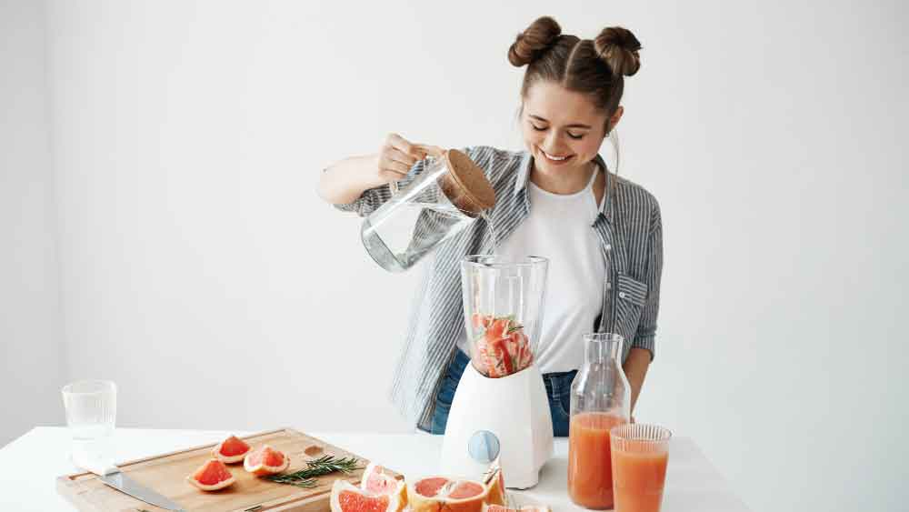

We are committed to providing organic, plant-based juices that refresh, nourish, heal and energize your body.

Petunia is the heart of Penny Juice. A wellness advocate who believes good health starts with simple, natural ingredients.